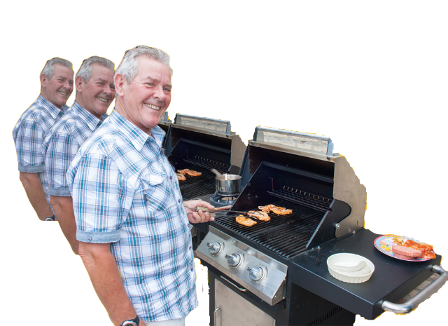

6. Barbecue- Basic dads have their barbecue game on point. Whether it be burgers
and hotdogs, or steaks (really any grilled meats).They are masters of the grill for any occasion.
It does not matter the conditions, basic dads will barbecue in the sweltering summer heat or in the cold of a bitter wintery storm.